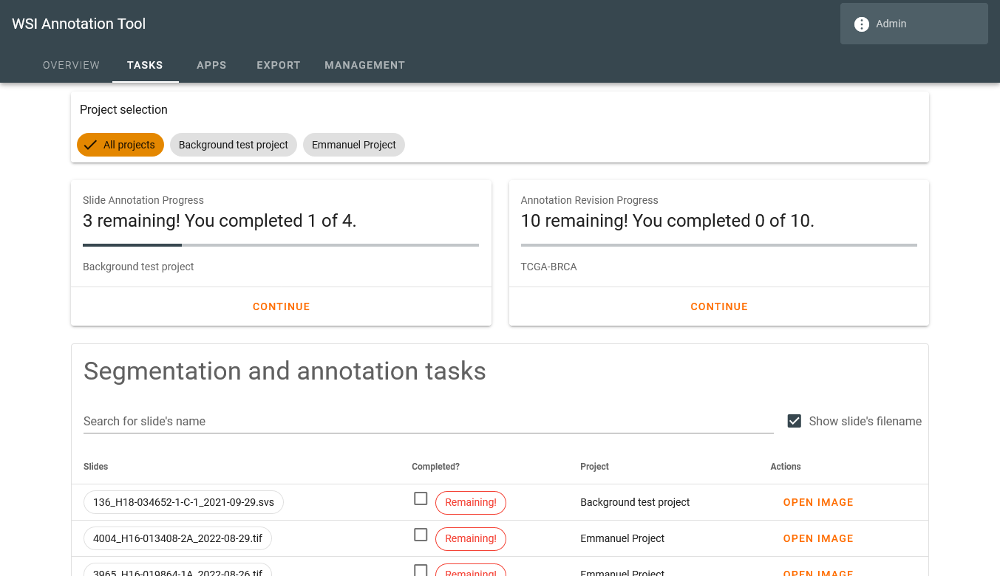
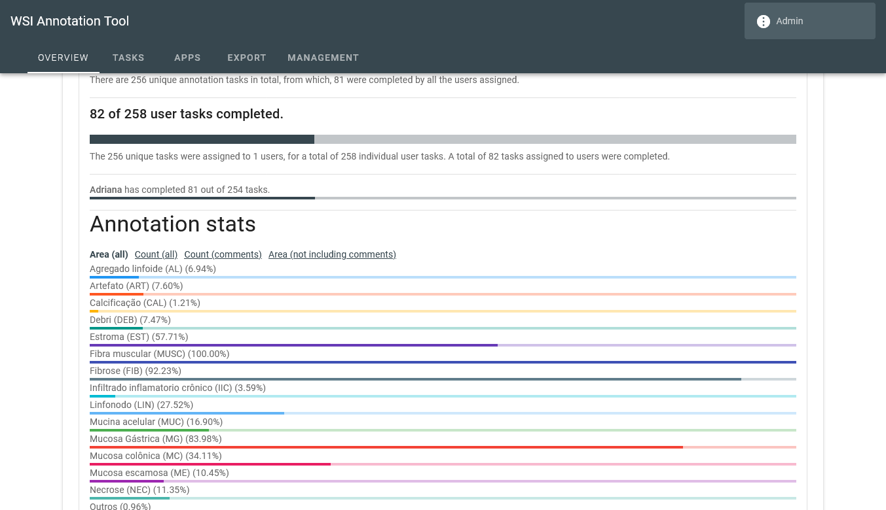
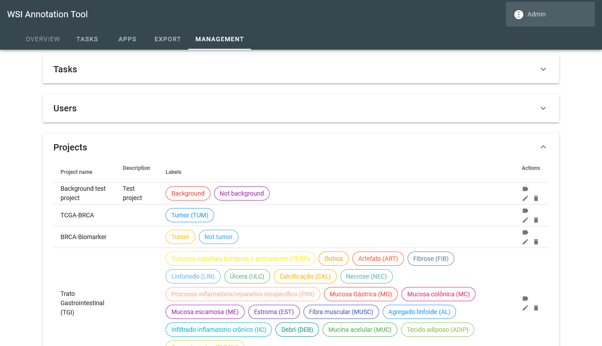
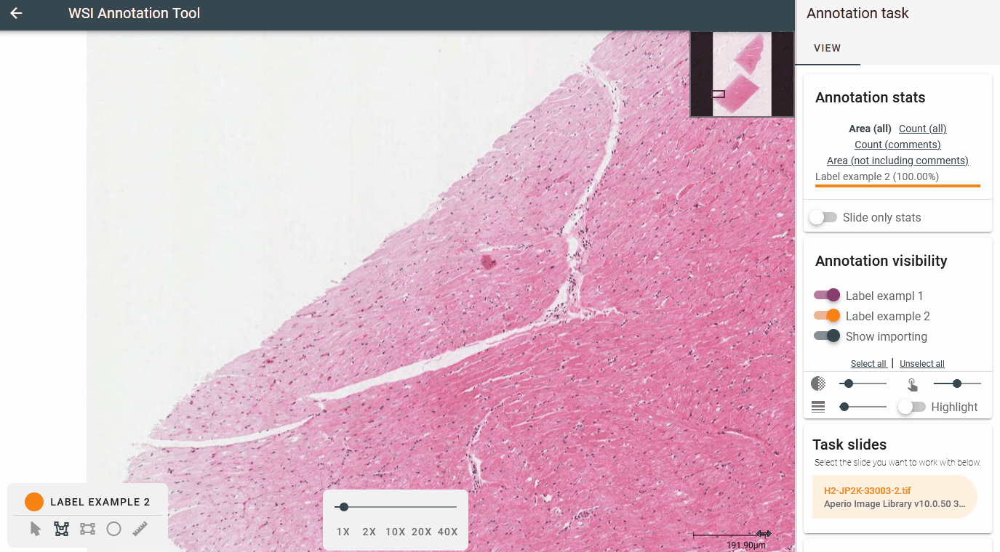
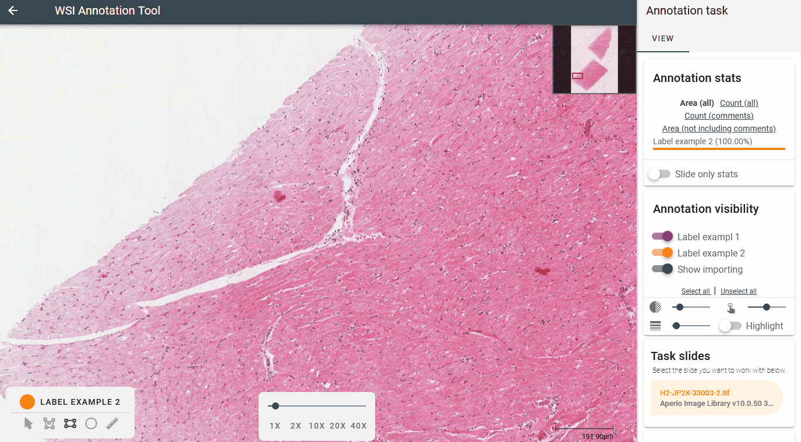
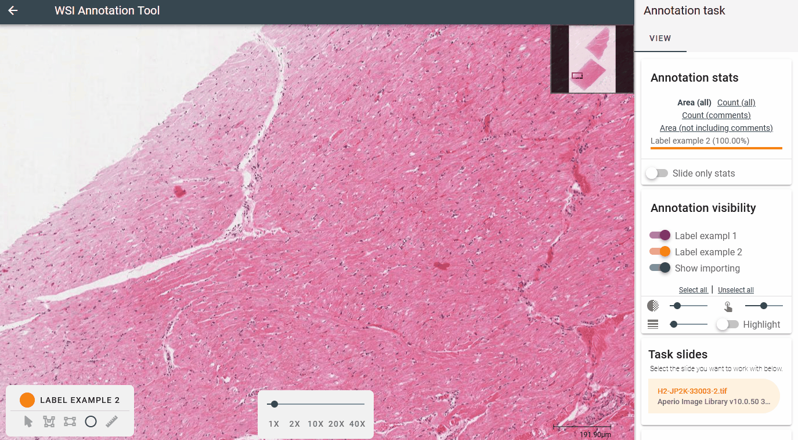
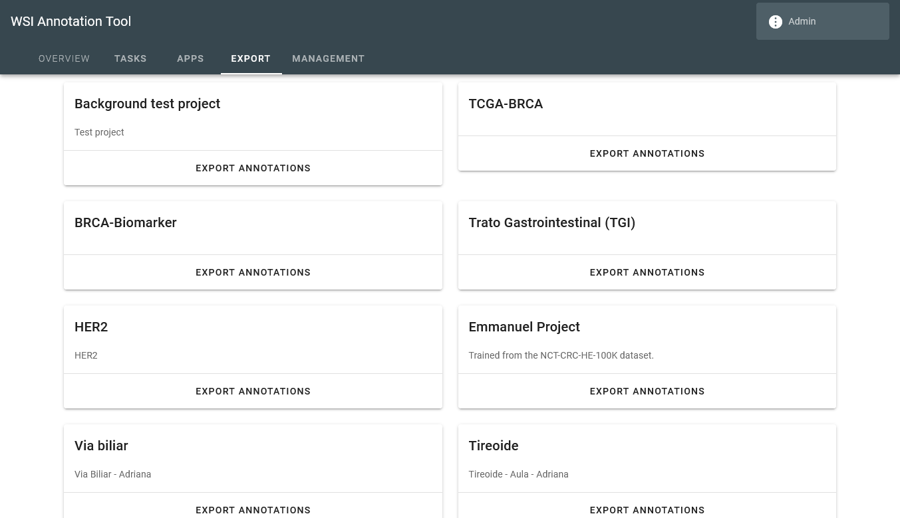

Introduction
|  |  |  |
{kind=link}
{kind=link}
{kind=link}
The software and its goals
WSI2ML is a straightforward tool for annotating Whole Slide Images (WSIs) for machine learning applications. WSIs are high-resolution digital images of entire tissue sections, often used in medical research and diagnosis. Annotating these images can be a time-consuming and challenging task, but it is critical for training accurate machine learning models.
The goal of WSI2ML is to streamline the annotation process, making it easy researchers and clinicians to label WSIs, and for machine learning specialists to export and use the data for training new machine learning applications. The software introduces a task-based approach to annotating data, which simplifies the process of training new annotators, tracking their progress and delegating new tasks. These annotations can then be used to train machine learning models to accurately diagnose diseases or predict patient outcomes.
Developed as web-application, the software can be installed on a server and made accessible to users in your organization.
Installation
Before you can start annotating your Whole Slide Images (WSIs), you need to install WSI2ML on your server. This section will guide you through the installation process.
- The first step is get the source-code to your server, this can be accomplished by running the
following GIT command or by simply downloading this repository as a ZIP file.
git clone https://bitbucket.org/luanvcmartins/img-segmentation.git
Docker image
The easiest way to set up the software is using the docker image with docker-compose. Beware you will need
to properly configure the docker-compose.yml to your environment.
When creating a new project, the software will require the location of the folder containing the source images to be annotated. If you decide to use docker, you will need to mount your image folders inside your docker environment.
- Open the
docker-compose.ymlin your text editor. - In
volumes, mount the folders containing the images for your projects. You can accomplish this by reading the docker documentation on mounting folders, but the general idea is to: - To mount the folder
/raid/images/, you can input- "/raid/images:/images"in the volume section.
The images will be available inside docker in aimagesfolder. - In
ports, assign the desired port your docker instance will listen, make sure to keep the destination folder the same (2000). By default, the software is set up for port 2000.
For example:- Use
- "80:2000"to host the software on the default 80 port; - Use
- "8080:2000"to host the software on the 8080 port.
- Use
- Run the
docker-composeto build the image and start the instance:
docker-compose build . docker-compose up -d - Test your instance! It should be available on
http://localhost:port-used(if you didn't change the original port, it will be 2000)
First use
Once you deploy the application, you will use the login information `admin` with the password `admin` to login into the system for the first time. We strongly advise you to change the password or delete the user after you complete the first setup process.- Go to the management tab and create a new project: the project's name, WSI folder, and annotation labels will be required. The project's description is optional.
- Create a new user to delegate your tasks. The user's name, login and password must be provided. Additionally, users that require additional feature access may receive additional permissions. Annotators need no permissions.
- Create your first task: select the files for your task on the list and the users to annotate it. An optional task name can also be provided.
Annotating data
In this section we will dive into how to use the software for image annotation and how it works for annotators. It's going to be a small tutorial into how to use the system and what the annotation process actually looks like. On the next section Management, we provide tutorials on how to set up projects, users and tasks.
Task page
Our annotation software offers a personalized user experience with a welcoming page that greets the user upon logging in. This page displays the tasks assigned to the user, including annotation and revision tasks.
To help users track their progress, two cards are displayed at the top of the screen, one for annotation tasks and one for revision tasks. These cards display the number of remaining images to annotate or review and the number of completed tasks, allowing users to easily monitor their progress.
To continue working on their tasks, users can simply click on the "continue" button on the card to open the next image. This button will open the same image until the user flags the task as completed, at which point the following image will be opened.
In addition to the card view, users can access a table displaying all their assignments. This allows users to browse and explore all their tasks and images, update their assignments if necessary, and keep track of their progress. Our annotation software's user-friendly task screen makes it easy for pathologists and other domain-specialists to manage their tasks and maximize their efficiency.
Annotation screen
Our annotation software features a user-friendly design with a clear division between two main parts of the annotation screen. The WSI explorer with its controls occupies the left part of the screen, while the control panel containing many options for the tasks is located on the right.
The WSI explorer provides users with easy-to-use controls for viewing and exploring the WSI file. Users can use the mouse button to drag the viewer and the scroll wheel to zoom in or out. Additionally, the viewer's center contains controls for exploring the image. On the bottom-left, the annotation toolbox and associated tools are available.
On the right of the viewer, users can access the control panel containing two tabs by default. The first tab contains tasks-related options, while the second lists the annotations made. This arrangement helps users keep track of their annotations and access task-related options easily.
Moreover, users can resize the control panel by dragging its edge to fit their screen space and personal preference.
Annotating
Anonymization The software will only provide access to the main image inside your WSI file, as such, it's not strictly required to anonymize the images during the annotation phase. However, we do recommend you to do so, as not only it's good practice to work with fully anonymized images, but it will be easier to allow ML-specialists to use them once the annotation phase is over.
Our software is designed to provide an easy-to-use annotation procedure for domain-specialists, such as pathologists. To create new annotations, users can navigate the whole slide image (WSI) file using the mouse. Once a region is found for annotation, users can find the annotation tools on the bottom-left of the viewer. To create a new annotation, users are expected to select the desired label for the region, which defines the color of the annotation, and the tool to select the region. Once the region is delimited, users can press ENTER to save the annotation or ESC to cancel the process. While the user uses an annotation tool, the image can be dragged by holding down the SPACE key.
During the annotation drawing phase, a new control appears above the annotation toolbox, which allows users to undo or redo changes by sliding the slider back. This feature is particularly useful when using the polygon tool to annotate complex shapes. Users have full control to redo steps until a new point is added, which removes future steps from the slider.
It's important to note that only previously registered labels during the project's setup are available to be used. This ensures consistency in the labeling process and helps maintain data integrity throughout the project. Our software's user-friendly design and intuitive annotation tools help streamline the annotation process for pathologists and other domain-specialists by only providing the necessary access to each. Project setup are limited to the project's manager with management permissions.
Polygon tool
{kind=link}
The Polygon tool is a powerful feature in this software that allows users to create annotations with complex shapes. With this tool, users can easily create polygons of any shape and size by clicking or dragging their mouse.
To use the Polygon tool, simply select it from the toolbar, select the desired label (color) and click on the image to add a single point. Users can then continue to click and add additional points to create a polygon with as many sides as desired. Alternatively, users can click and drag their mouse to add points along the movement, creating a more fluid shape.
Once the annotation is drawn, it can be registered in the system by pressing ENTER.
Rectangle tool
{kind=link}
The Rect tool is a simple but useful tool for annotating large regions of the same class.
To use the Rect tool, select it from the tools panel, along with the desired label. Once you have selected the Rect tool, click and drag from the location where you want one edge of the rectangle to be, to the location where you want the opposite edge to be. As you drag, you'll see a preview of the rectangle being created.
Once the annotation is drawn, it can be registered in the system by pressing ENTER.
Circle tool
{kind=link}
The Circle tool is a versatile tool for annotating smaller regions of the same class.
To use the Circle tool, select it from the tools panel. The icon for the Circle tool looks like a circle with a dotted outline. Once you have selected the Circle tool, click on the location where you want the center of the circle to be. While holding the mouse button down, drag the cursor until the circle fully encircles the region you want to annotate. As you drag, you'll see a preview of the circle being created.
Once the region is selected, it can be registered in the system by pressing ENTER.
Importing annotations
Our software provides a convenient "import annotations" tool that allows users to import previously made annotations from other software when annotating new images. To use this feature, users can simply click on the "import annotations" button, which is located on the toolbar. Then, they can select the .geojson file containing the annotations to be imported.
Once the file is loaded, the annotations will be displayed to be imported, and users can choose to import them individually or all at the same time. To import only some of the annotations, users can click on the desired annotation to navigate to its card and press the import button. At this time, users can also change the label associated with the annotation. Alternatively, to import all annotations at once, users can click the "import all" button on the card.
If the user is satisfied with the annotations that have been imported, they can cancel the remaining annotations by clicking the cancel button on the card. It is important to note that the imported file is expected to contain label information. If the label information is not available in the file, the user will have to select the labels for each annotation individually. This feature streamlines the annotation process and can save users a significant amount of time when working with previously annotated images.
Revising annotations
Pathology is a field where the pathologist's experience plays a significant role in the diagnostic process, which, in turn, may impact the quality of Machine Learning applications trained with a given dataset. Due to the subjective nature of the field, there can be variations in annotations, which may impact the quality of the data. To address this issue and improve the quality of annotations, our software provides the functionality to revise previous annotations tasks by other users.
When revising annotations, the user can flag them as correct, incorrect with a wrong label, or incorrect with a wrong label and/or region. This information is used when exporting annotations, where the machine learning specialist can choose to only export annotations that have been agreed upon by one or more revisers. This helps ensure that the exported data is accurate and consistent, which is crucial for the development of reliable machine learning models in pathology.
Revision annotation-tasks are listed in the user's starting page. When selected, the annotation screen opens with the annotations to be revised, where the user can navigate through the annotations and provide feedback on each one. Once the users feels this task is completed, it can be marked as so.
Management
In this section we will walk through the process of setting up the software for your annotators, managing the projects, and keeping track of the progress.
The software provides special permissions to certain users, referred to as "managers," who have access to the Management tab. This tab grants users with "managements" permissions the ability to list, create, edit, and remove projects, users, and tasks. In addition to their managerial role, these users may also receive annotation or revision tasks as necessary. This feature is designed to provide greater flexibility and control to managers who play a key role in the research process.
Managing projects
The software allows users with appropriate permissions to create, edit, and manage projects. A project is a way to organize research goals by providing a name, description, and the folder location of the images to be annotated. Additionally, a project specifies which labels are included, and each label is identified by a unique color. These labels are displayed to the annotators when they open a task belonging to the project.
Managers do not need to assign users to their projects, as the software automatically assigns them when they receive a task belonging to the project. When editing a project, labels can be changed by clicking on their name, modifying them, and then saving the changes. Only the project description is optional when creating a new project; all other information is required.
Project's folder
If you use docker, you will need to mount your folders in the container when configuring your container build. When creating new projects, you will input the folder's location inside the container.
The software will let you know if you provide an invalid folder location when creating a new project or task.
To effectively use the software for annotating images, it's important to properly set up the project's image folder. The software expects users to input the folder path where new images are going to be found. This path can be relational to the software working path or absolute. Once this is set up, only images inside the designated folder will be available to be chosen when creating a new task for that project.
To improve organization and ease of use, it's recommended to divide your folder space into projects. This way, it will be easier to keep your images organized and ensure that only the relevant images are available for each project. Additionally, you can take advantage of Linux's file structure to organize your files without needing to physically move them, making it even easier to manage your projects and image folders.
Managing users
Managers with "manages users" permissions can list, add, and edit users. To register a new user, provide their name (full name is accepted), login information (generally first.lastname), a default password, and permissions. Annotators don't require any additional permissions. Once a user signs in, they can change their password by clicking on their profile in the app bar.
Permissions
The following permissions are available in the system. Generally, project managers should receive all of
them, ML-specialists should have Access overview and Can export annotations, while
domain-specialists
(annotators) requires no other permission.
Manage users: can create or edit users.Manage tasks: can create or edit tasks.Manage projects: can create or edit projects.Manage apps: can create or edit apps.Can export annotations: has access to the export tab and can use it to generate annotation files to train ML models.Access overview: can access the overview tab and keep track of user's progress throughout their assigned tasks.
Managing tasks
Managers with "manages tasks" permission can create and assign tasks to annotators. When creating a task, provide an optional name, the project, task type, and images, along with the users assigned. The interface updates with task types, either user annotation or revision, when a project is selected. To create a user task, select files to annotate, which will combine all images into a single task. To create a revision task, select a previously completed task based on name, date, or files and choose annotators to be revised.
Batch task creation is also available, where a task name, project, and image folder are provided. The intersection control allows for dividing tasks among annotators, with an option to control how many people should annotate each slide. This control can be set to assign all annotators to each image or equally divide slides among annotators.
For example, if you want many perspectives on the same file, you can make two or more annotators work on the same image. As such, for instance, if you have 4 annotators, and you want all of them to annotate each image, you select the intersection level 4. However, if you want to equally divide slides, you can choose the intersection level 1, which will assign each image only one time to the annotators.
Tracking progress
Users with the access overview can track progress on the "overview tab".
Exporting data
In this section we will explain to generate a version of the dataset and how to employ it to use in machine learning tasks.
{kind=link}
Exporting screen
Users with the "can export annotations" permission can utilize the Export tab to access all available projects in the software. To export annotations, users can select a project, which opens the project's export form. There are two options for exporting annotations: exporting annotations for each task individually or exporting all data.
The user have the option select the annotations to be exported per task individually. In this context, the user can select one of the annotators who completed the task to export its annotation for those slides. When an annotator is selected, the system will query available revising options, if anyone revised that annotation task. The users have the additional option to chose one or more reviewers to filter out dubious annotations from the dataset.
The software also provides the options to export all data in a much easier approach. The user can select which annotators they want to export the data and which reviewers they want to filter out annotations. This will automatically select all possible tasks for exporting.
Annotations are only eligible to be exported if all selected reviewers agree that it is correct or if they agree on the correction. If that happens, the corrected version is exported. The user also has the option to not export annotations that have not been revised.
Once the user is satisfied with the export options, they can click the export button to start the process, and the output will be a zip file containing .geojson files for each slide/image annotated. The process can take a while to complete depending on the amount of annotations, however, the user will be notified of its progress.
The .geojson files contain both the annotation geometry and metadata, allowing for customization of
analysis. The software was designed to be non-opinionated in regard to machine learning tasks and
approaches employed by the user, so the geojson format allows for a wide range of machine learning
applications to be developed. For example, the same dataset can be used with the shapely
library to extract
tiles in a classical CNN-based classification setting or use the geometry for novel graph-based
approaches.
Acknowledgement
This work was carried out at the Center for Artificial Intelligence (C4AI-USP), with support by the São Paulo Research Foundation (FAPESP grant #2019/07665-4) and by the IBM Corporation.